Report 2: Detailed Block Breakdown with Screenshots
Site: thermofisher.com | Date: 2026-03-20 | Blocks: 35 | Variations: 87 | Screenshots: 59
1. hero Medium SPLIT into 3 EDS blocks
7 variants across Modern, Legacy, and Corporate platforms
| Variant | Description | Platform | DOM Signature | Reference URL | Screenshot |
|---|
| V1: Page heading (standard) | H1 + optional subtitle + breadcrumb | Modern | .cmp-p-pageheadinghero |
Cell Analysis |
 |
| V2: Foreground product image | H1 + product photo overlay | Modern | .cmp-pageheadinghero--hasForegroundImage |
VolumeScope SEM |
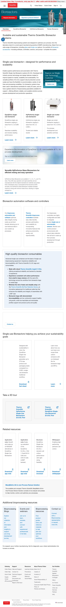 |
| V3: Gradient overlay | H1 on dark gradient background | Modern | .cmp-pageheadinghero__gradient-black |
Environmental |
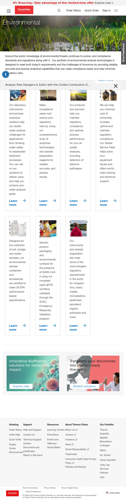 |
| V4: With CTA buttons | H1 + subtitle + action buttons | Modern | .cmp-pageheadinghero + .cmp-ctaitem |
Antibodies |
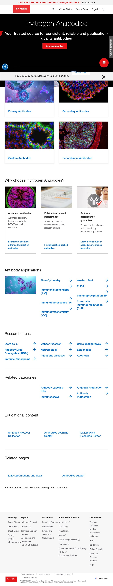 |
| V5: Thinbanner (legacy) | Text-only H1 banner | Legacy | .thinbanner.thinbanner-info |
Chromatography |
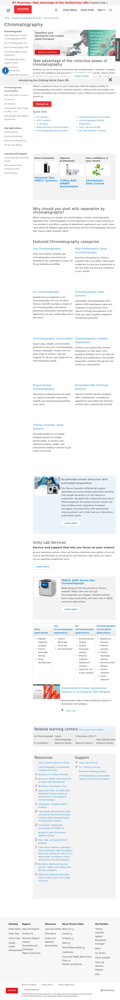 |
| V6: Mondrian hero | Multi-slot promo grid (1 large + 2 small) | Legacy | .mondrian.section |
Clinical |
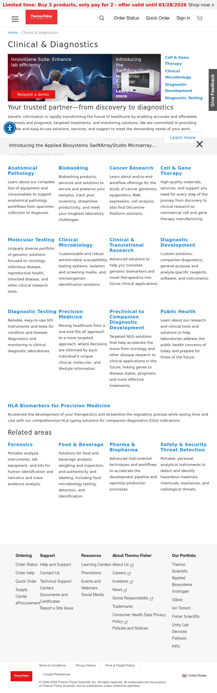 |
| V7: Corporate hero | Custom corporate variants | Corporate | .cmp-p-herotext / .cmp-p-banner |
CSR Landing |
 |
2. cards Medium-High CONSOLIDATE
11 variants — single block with variant classes (2/3/4-up, overlay, icon, text-only)
| Variant | Description | Platform | Reference URL | Screenshot |
|---|
| V1: Image+Title+Desc+CTA (3-up) | Standard content card in 3-column grid | Modern |
Bioprocessing |
 |
| V2: Image+Title+Desc+CTA (4-up) | Compact 4-column variant | Modern |
Lab Equipment |
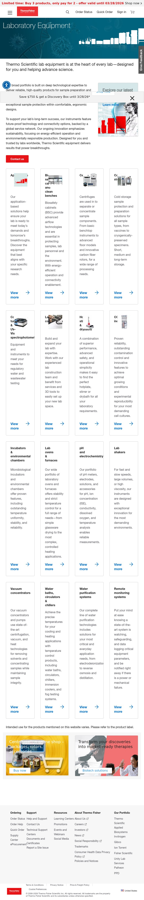 |
| V3: Image+Title+Desc+CTA (2-up) | Wide 2-column variant | Modern |
Pharma |
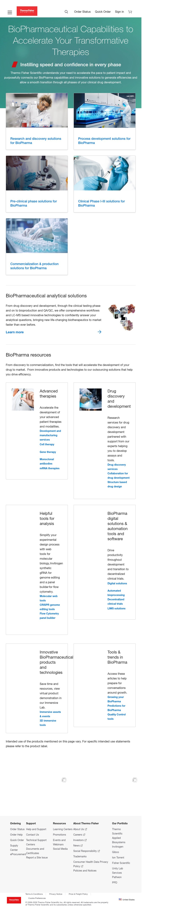 |
| V4: Text overlay on dark image | Featured resource with dark overlay | Modern |
Bioprocessing Resources |
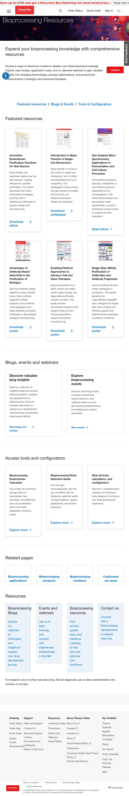 |
| V5: Text-only (no image) | H3 + paragraph, no image | Both |
Invitrogen |
 |
| V6: Product showcase | Product thumbnail + name below | Both |
Invitrogen |
Same page as V5 |
| V7: Category cards (legacy 4-col) | Heading + text per column | Legacy |
Digital Solutions Events |
|
| V8: Icon value props (3-up) | Icon image + H3 + description, no CTA | Modern |
Bioprocessing About |
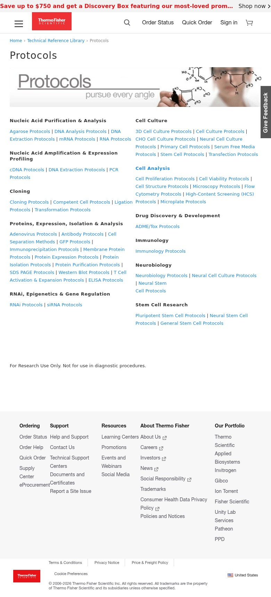 |
| V9: Promotion cards with badge | Image + badge + title + CTA | Modern |
Promotions |
 |
| V10: Tech reference cards | Image + title + bullet list + View all | Modern |
Tech Reference Library |
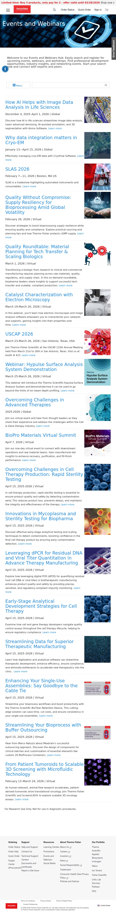 |
| V11: Icon cards (decorative) [NEW] | Small decorative icon + H2 + description + CTA (3x3 grid) | Legacy |
Cell Culture Basics |
 |
3. columns Medium CONSOLIDATE
7 variants — 2/3/4-col + asymmetric (lt7, lt8, bordered-lt4)
| Variant | Description | Platform | Reference URL | Screenshot |
|---|
| V1: 50/50 text-left image-right | Standard side-by-side | Modern |
Bioprocessing |
 |
| V2: 50/50 image-left text-right | Reversed layout | Modern |
Bioprocessing About |
See cards-v8 page |
| V3: 75/25 asymmetric | Content + sidebar split | Modern |
VolumeScope |
See hero-v2 page |
| V4: Legacy 2-col (cq-colctrl-lt0) | Equal 2-col parsys | Legacy |
Chromatography |
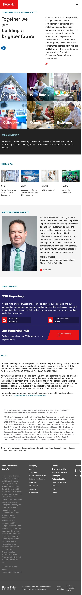 |
| V5: Legacy 3-col (cq-colctrl-lt3) | Equal 3-col parsys | Legacy |
EM Landing |
 |
| V6: Legacy asymmetric (lt7, lt8) [NEW] | 70/30 and 80/20 splits | Legacy |
Protein Assays |
|
| V7: Bordered 4-col (bordered-lt4) [NEW] | 4-col with borders between columns | Legacy |
Digital Solutions |
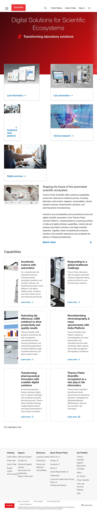 |
4. teaser Medium CONSOLIDATE
5 variants — bar, full-image, split-image, promotional, gradient-dark
| Variant | Description | Reference URL | Screenshot |
|---|
| V1: Header promo bar | Thin top-of-page promotional banner | All pages (global) | Visible in most screenshots |
| V2: Image-background full-width | Text overlaid on background image |
Clinical |
 |
| V3: Image-right split | Text left + image right | Clinical | See hero-v6 page |
| V4: Mid-page promotional | H2 + text + CTA with background |
Molecular Biology |
 |
| V5: Dark gradient overlay [NEW] | Text on dark gradient over image |
Translational Research |
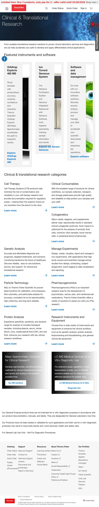 |
5. form Complex SPLIT into 2
4 variants — form (standard+XF) + form-complex (Eloqua)
| Variant | Description | Reference URL | Screenshot |
|---|
| V1: Modern Pragma form | 7-8 fields, clean layout |
PCR Innovation Form |
 |
| V2: Legacy Eloqua form | 20+ fields, reCAPTCHA, conditional logic |
GC Columns Form |
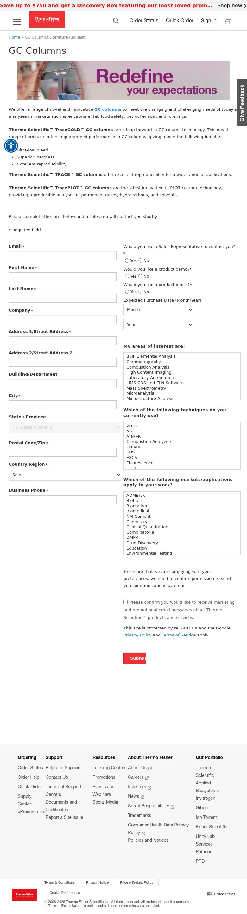 |
| V3: Experience Fragment form | Shared XF-embedded form | Translational Research | See teaser-v5 page |
| V4: Inline request form [NEW] | 2 embedded forms on product pages |
Protein Assays |
See columns-v6 page |
6. sidebar-nav Medium CONSOLIDATE
3 variants — auto-nav, manual-nav, chapter-nav
| Variant | Description | Reference URL | Screenshot |
|---|
| V1: Auto-navigation tree | Auto-generated from page hierarchy |
Molecular Biology |
 |
| V2: Manual left-nav | Manually authored link groups |
PCR |
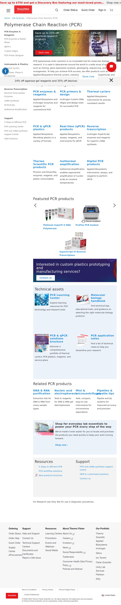 |
| V3: Chapter sidebar (7 groups) [NEW] | Extensive grouped sidebar with 7 nav sections |
Cloning |
 |
7. video Medium CONSOLIDATE
4 variants — Brightcove player, video teaser, modern player, playlist
| Variant | Description | Reference URL | Screenshot |
|---|
| V1: Brightcove player (legacy) | Full video player embed |
Real-Time PCR |
 |
| V2: Video teaser card | Thumbnail + play + duration + title | VolumeScope | See hero-v2 page |
| V3: Modern Brightcove player | cmp-p-videoplayer wrapper |
Sustainable Design |
|
| V4: Video with playlist [NEW] | Brightcove player + sidebar playlist (7 videos) |
Cell Culture Basics |
 |
8. accordion Medium CONSOLIDATE
2 variants — Modern cmp-accordion + Legacy Bootstrap accordion
| Variant | Description | Reference URL | Screenshot |
|---|
| V1: Modern cmp-accordion | AEM Core Component accordion |
Services |
 |
| V2: Legacy Bootstrap accordion [NEW] | Bootstrap-style toggle accordion |
Digital Solutions |
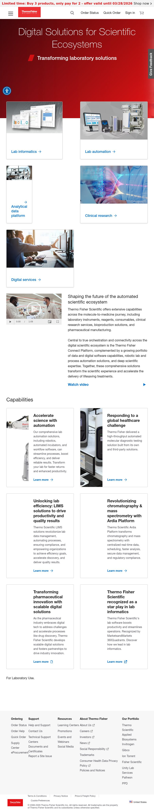 |
9. tabs Medium CONSOLIDATE
3 variants — pragma-tabs, nav-tabs, workflow-tabs
| Variant | Description | Reference URL | Screenshot |
|---|
| V1: Pragma tabs | Toggle-based tab component | Global header/footer | Visible in most screenshots |
| V2: Content tabs (nav-tabs) | Tabbed content panels |
Sanger Sequencing |
 |
| V3: Workflow tab container [NEW] | Step-based workflow tabs (tabstep) |
Digital Solutions |
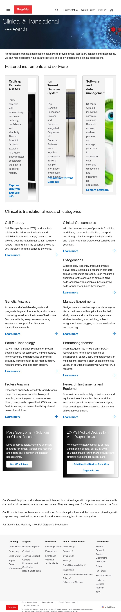 |
10. anchor-nav Simple CONSOLIDATE
3 variants — cmp-anchorlist, inline anchors, pipe-separated links
| Variant | Description | Reference URL | Screenshot |
|---|
| V1: cmp-anchorlist (formal TOC) | Structured jump-link navigation |
Order |
 |
| V2: Inline anchor links | Pipe-separated text links | Bioprocessing | See cards-v1 page |
| V3: Pipe-separated link directory [NEW] | Category headings with pipe-separated link lists |
Protocols |
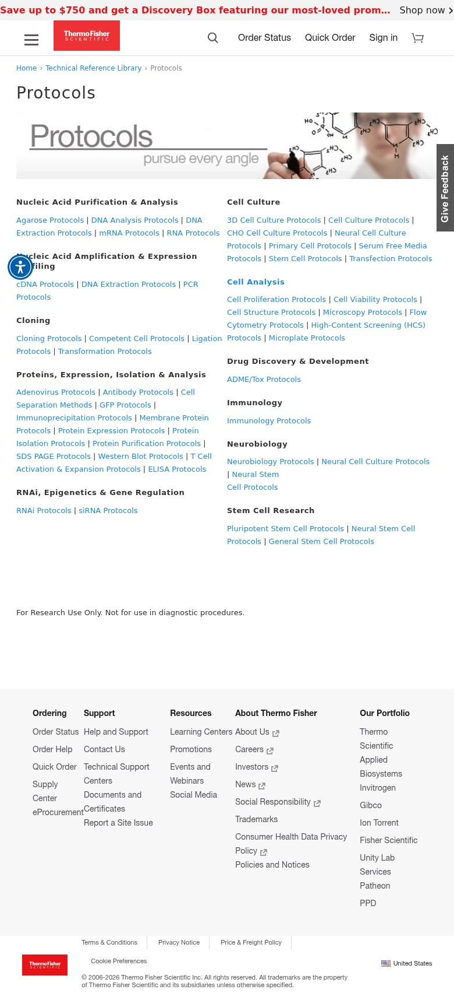 |
11. product-sub-nav Complex CONSOLIDATE
2 variants — sticky nav + manual/auto nav with dropdowns
| Variant | Description | Reference URL | Screenshot |
|---|
| V1: Sticky product nav | Manual + auto nav with tabs |
Bioreactors |
 |
| V2: Manual/auto nav with dropdowns [NEW] | Multi-level nav with dropdown support and active tracking |
Sustainable Design |
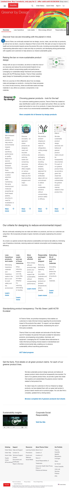 |
12. event-table Complex STANDALONE
1 variant — filterable event list with 20+ checkboxes, search, date formatting, pagination
| Variant | Description | Reference URL | Screenshot |
|---|
| V1: Filterable event list | 20+ filter checkboxes + search + event rows |
Events |
 |
13. resources-grid Simple FRAGMENT
1 variant — shared 4-up footer grid
| Variant | Description | Reference URL | Screenshot |
|---|
| V1: 4-up icon+title+CTA footer | Standardized resource footer grid |
Bioprocessing |
 |
14. section-metadata (wells) Simple MAP from wells
8 variants — CSS-only background/spacing styles on sections
| Variant | CSS Class | Reference URL | Screenshot |
|---|
| V1: White background | .well-white | Chemicals Learning | — |
| V2: Blue-light background | .well-blue-light |
PCR |
 |
| V3: Gray-lighter background | .well-gray-lighter | Sanger Sequencing | See tabs-v2 page |
| V4: Gray-light background | .well-gray-light | Legacy environmental pages | — |
| V5: Mini compact | .well-mini | PCR | See section-meta-v2 page |
| V6: Background image [NEW] | .well-background-image | Cloning | See sidebar-nav-v3 page |
| V7: Page heading well [NEW] | .wellPageHeading + .well-wrapper | Cloning | See sidebar-nav-v3 page |
| V8: Modern section container | .cmp-sectioncontainer + .cmp-sectiontitle | Order | See anchor-nav-v1 page |
15. embed Medium CONSOLIDATE
3 variants — LTRawHTML, 3D tours, experience fragments
| Variant | Description | Reference URL | Screenshot |
|---|
| V1: LTRawHTML | Raw HTML injection |
Chromatography |
 |
| V2: 3D tours | Interactive 3D product tours | Orbitrap 3D Tour | — |
| V3: Experience fragments | Shared experience fragments | Various pages | — |
16. table Simple CONSOLIDATE
2 variants — spec table + striped RTE table
| Variant | Description | Reference URL | Screenshot |
|---|
| V1: Spec table | Product specification table |
Vanquish LC |
 |
| V2: Striped RTE table | Rich text editor table with striped rows | Various legacy pages | — |
17. quote / testimonial Simple CONSOLIDATE
2 variants — CEO letter + customer testimonial
| Variant | Description | Reference URL | Screenshot |
|---|
| V1: CEO letter | Executive quote block |
CSR |
 |
| V2: Customer testimonial | Customer quote with attribution | Real-Time PCR | See video-v1 page |
18. carousel Complex CONSOLIDATE
2 variants — hero slider + filmstrip magazine carousel
| Variant | Description | Reference URL | Screenshot |
|---|
| V1: Hero slider | Sliding hero panels with dots/arrows |
Partnering |
 |
| V2: Filmstrip magazine [NEW] | Horizontal scroll filmstrip of articles |
Life in the Lab |
 |
19. highlights Medium STANDALONE
1 variant — stats/numbers grid (corporate)
| Variant | Description | Reference URL | Screenshot |
|---|
| V1: Stats/numbers grid | Counter animation + responsive grid |
CSR |
 |
20. mondrian Complex STANDALONE
4 variants — complex CSS grid with responsive breakpoints
| Variant | Description | Reference URL | Screenshot |
|---|
| V1: Feature promo | 1 large + 2 small slots |
Clinical |
 |
| V2: Product showcase (module-f) | Product image + info |
Protein Biology |
 |
| V3: Mondrian-group [NEW] | Grouped featured items |
Protein Assays |
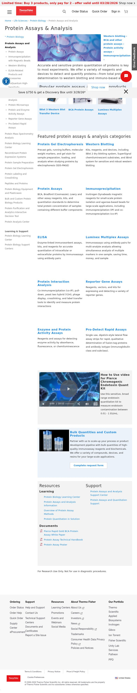 |
| V4: Featured-list [NEW] | Featured product list layout | Protein Assays | See mondrian-v3 page |
21. featured-grid Medium
1 variant — asymmetric magazine layout
22. resources-list Simple
1 variant — title + description link pairs
23. pipeline Medium
1 variant — drug dev phase cards
24. csr-pillars Medium
1 variant — corporate pillar cards
25. blog-cards Medium
2 variants — WordPress card grid + legacy post-list [NEW]
26. video-teaser [NEW BLOCK] Medium STANDALONE
1 variant — thumbnail + play button overlay + duration badge + title + description
| Variant | Description | Reference URL | Screenshot |
|---|
| V1: Thumbnail + play overlay | Video card with play icon, duration badge, modal link |
Supply Center |
 |
27. video-modal [NEW BLOCK] Medium STANDALONE
1 variant — modal overlay dialog for inline video playback
| Variant | Description | Reference URL | Screenshot |
|---|
| V1: Modal overlay | Modal dialog wrapping video player | Supply Center | See video-teaser-v1 page (modal triggered on click) |
28. video-playlist [NEW BLOCK] Medium STANDALONE
1 variant — Brightcove player + sidebar playlist of 7 videos
| Variant | Description | Reference URL | Screenshot |
|---|
| V1: Playlist | Video player + sidebar playlist (title + description per video) |
Cell Culture Basics |
|
29. workflow-stepper [NEW BLOCK] Complex STANDALONE
1 variant — multi-step interactive workflow navigation
| Variant | Description | Reference URL | Screenshot |
|---|
| V1: Multi-step workflow | Step 1 > Step 2 > Step 3 with content switching per step |
Cloning |
 |
30. chapter-toc [NEW BLOCK] Medium STANDALONE
1 variant — book/handbook chapter navigation (Part I-VI, Ch 1-23)
| Variant | Description | Reference URL | Screenshot |
|---|
| V1: Handbook chapter navigation | Part headers (I-VI) with chapter links (1-23), separated by horizontal rules |
Molecular Probes Handbook |
 |
31. handbook-search [NEW BLOCK] Medium STANDALONE
1 variant — content-specific inline search box
| Variant | Description | Reference URL | Screenshot |
|---|
| V1: Inline search box | Input + button for searching within handbook content |
Molecular Probes Handbook |
 |
32. quick-menu [NEW BLOCK] Simple STANDALONE
1 variant — titled quick-links navigation section
| Variant | Description | Reference URL | Screenshot |
|---|
| V1: Titled quick-links | "Quick links" section with multi-column link lists |
Diagnostic Testing |
 |
33. support-hub [NEW BLOCK] Medium STANDALONE
1 variant — categorized link directory for support pages
| Variant | Description | Reference URL | Screenshot |
|---|
| V1: Categorized link directory | Collapsible TOC, quick-action sidebar, chat widget integration |
Support |
 |
34. social-share Simple DEFAULT CONTENT
1 variant — inline social share icons (Facebook, LinkedIn, Twitter, Email). No custom block needed.
35. download-card / report-hub Simple MERGE with cards
2 variants — typed resource download + CSR report downloads. Merged into cards block.
Consolidation Summary
| Action | Count | Blocks |
|---|
| CONSOLIDATE | 11 | cards, columns, teaser, sidebar-nav, video, anchor-nav, tabs, accordion, embed, table, quote, blog-cards |
| STANDALONE | 15 | product-sub-nav, event-table, resources-grid, resources-list, mondrian, carousel, highlights, featured-grid, pipeline, csr-pillars, video-teaser, video-modal, video-playlist, workflow-stepper, chapter-toc, handbook-search, quick-menu, support-hub |
| SPLIT | 2 (into 5) | hero (3 blocks), form (2 blocks) |
| MERGE / DEFAULT | 3 | download-card (into cards), report-hub (into cards), social-share (default content) |
| MAP | 1 | section-metadata (from wells) |
Final recommended EDS block count after consolidation: ~30 custom blocks
Estimated total development: 85-165 dev days
Note: Screenshots are full-page captures of the reference URLs. Each page contains the block variation in context with other page elements. Some pages were captured after automatic redirects by the ThermoFisher website.